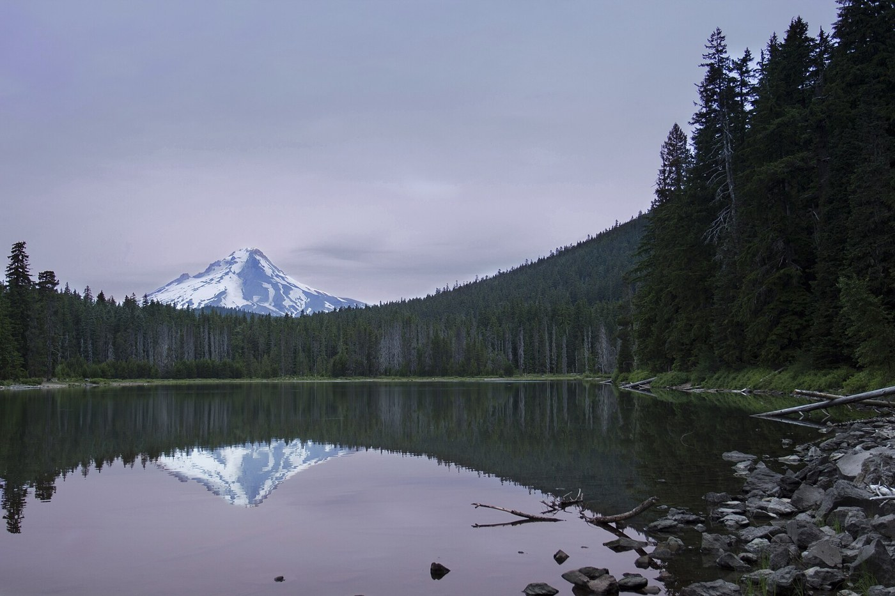
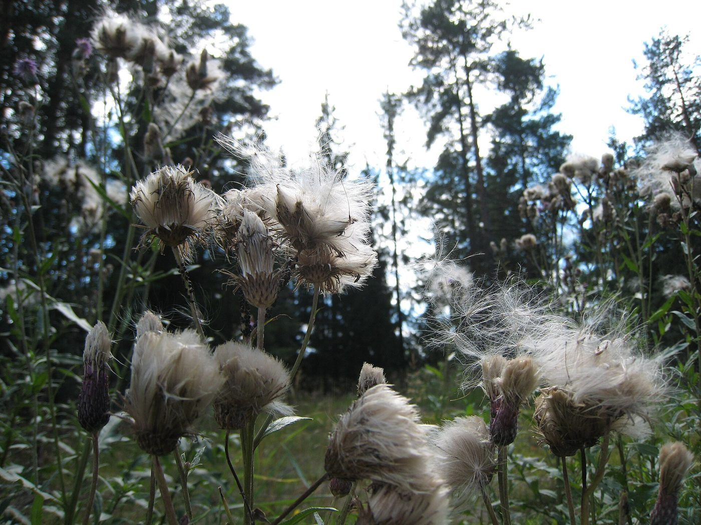

香川県東かがわ市・国道377号沿い
山あいの道の途中に、
ひと息つく一杯を。
ジャイ珈琲は、山あいにある小さなコーヒースタンド。走ってきた道、歩いてきた道の途中で、ほっとできる場所です。
お店のこと
ツーリングやドライブの、立ち寄り先。
Instagramのプロフィールでは「山あいの小さなコーヒースタンド」と紹介されており、珈琲・揚げパン・ピザを提供している様子がうかがえます。国道377号沿いにあり、ツーリングやドライブ、カフェ巡りの立ち寄り先として案内されています。
2025年6月の新店紹介記事によると、バイク好きの店主さんが新緑の山里にオープンしたお店で、徳島市の「とよとみ珈琲」の深いり豆をひきたてで使い、すっきりした味わいと紹介されています。ノンカフェインのコーヒーや、ランチの自家製タイレッドカレーも話題のようです。
情報源: Instagram @jaycoffee377 / 新店.com(2025年6月掲載の紹介記事)
店名の意味は確認できていません。上記以外の言い回しは制作側の表現です。




メニュー
珈琲、揚げパン、ピザ。
確認できた範囲の提供内容です。価格・内容は変わることがあるため「準備中」とし、最新情報はInstagramをご覧ください。


口コミ
こんな声が聞こえてきそうです。
イメージ例ツーリングの途中に寄りました。深いりのコーヒーで、体も気持ちもほっとしました。
イメージ例山の空気の中で飲む一杯が格別。揚げパンも一緒にいただきました。
イメージ例ドライブの休憩にちょうどいい小さなお店です。また近くを通ったら寄りたいです。
上記は制作側が作成したイメージ例で、実在のお客様の声ではありません。


アクセス・ご案内
国道377号沿い、入野山。
| 所在地 | 〒769-2714 香川県東かがわ市入野山2087-6 |
|---|---|
| 電話 | 準備中 |
| 営業時間 | 準備中 |
| 定休日 | 準備中 |
| SNS | Instagram @jaycoffee377 |
営業時間・定休日は情報源により異なるため、お出かけ前にInstagramでご確認ください。